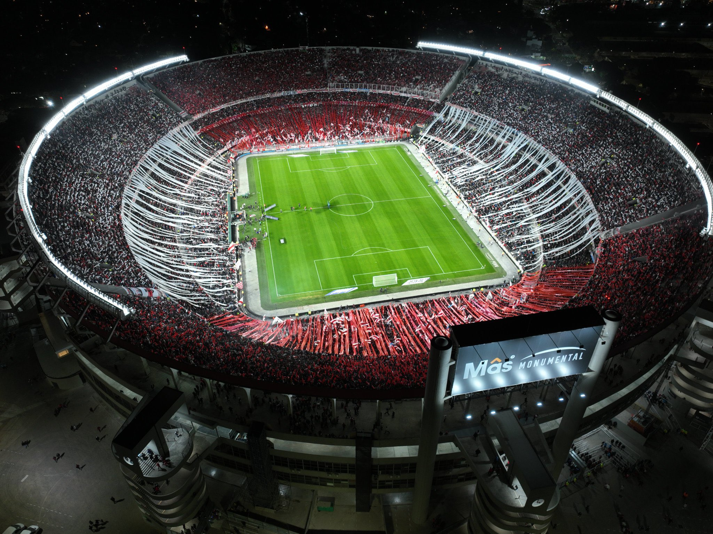

Historia
El Club Atlético River Plate es un club deportivo argentino profesional con sede en el barrio de Núñez
de Buenos Aires.
El equipo de fútbol es uno de los más exitosos de Argentina y ha ganado el título profesional de Primera
División un récord de 38 veces.
El club también ha ganado 15 copas nacionales.
Titulos
- 4x Campeón de la Copa Libertadores
- 1x Campeón de la Copa Sudamericana
- 1x Ganador de la Copa Intercontinental
- 3x Campeón de la Recopa Sudamericana
- 38x Campeón Primera División Argentina
- 3x Campeón de la Copa Argentina
- 3x Campeón de la Supercopa Argentina
- 2x Campeón del Trofeo de Campeones de Argentina
Escudo

La historia detrás del escudo
La banda roja: es el elemento más distintivo del escudo de River Plate.
Representa la franja del río de la Plata, que se encuentra muy cerca del estadio del club.
La banda blanca: simboliza el cielo de Buenos Aires, la ciudad donde se fundó el equipo en 1901.
Estadio Mâs Monumental
| Dirección | Capacidad | Equipos | Inauguración | Dimensiones | Superficie | Arquitectos | País | Remodelación | Construcción | Coordenadas |
|---|---|---|---|---|---|---|---|---|---|---|
| Av. Pres. Figueroa Alcorta 7597, C1428 Cdad. Autónoma de Buenos Aires |
84,567 | Club Atlético River Plate | 26 de Mayo 1938 | 105 x 70 m | Césped | José Aslan | Argentina | 2018, 2020-21 | 25 mayo de 1935 | 34°32'43″S 58°26'59″O / -34.545277777778, -58.449722222222 |
El Estadio Mâs Monumental, conocido simplemente como el Monumental, es un recinto deportivo mundialista
propiedad del Club Atlético River Plate, ubicado en la ciudad de Buenos Aires, Argentina. Se sitúa en la
intersección de las avenidas Presidente Figueroa Alcorta y Guillermo Udaondo, en el barrio de Belgrano.
Plantilla Actual
- Arqueros
- Franco Armani Nº1
- Jeremias Ledesma Nº25
- Lucas Lavagnino Nº37
- Santiago Beltrán Nº41
- Jugadores de campo
- Ramiro Funes Mori Nº3
- Federico Gattoni Nº6
- Enzo Díaz Nº13
- Leandro González Pírez Nº14
- Fabricio Bustos Nº16
- Paulo Díaz Nº17
- Milton Casco Nº20
- Daniel Zabala Nº22
- Marcos Acuña Nº24
- Agustín Sant'Anna Nº27
- Germán Pezzella Nº33
- Nicolás Fonseca Nº4
- Matías Kranevitter Nº5
- Manuel Lanzini Nº10
- Gonzalo Martínez Nº18
- Claudio Echeverri Nº19
- Rodrigo Villagra Nº23
- Ignacio Fernández Nº26
- Rodrigo Aliendro Nº29
- Franco Mastantuono Nº30
- Santiago Simón Nº31
- Jonás Luna Nº34
- Tobías Leiva Nº35
- Santiago Lencina Nº39
- Adam Bareiro Nº7
- Maximiliano Meza Nº8
- Miguel Borja Nº9
- Facundo Colidio Nº11
- Agustín Ruberto Nº32
- Pablo Solari Nº36
- Ian Subiabre Nº38
- Tomás Nasif Nº45